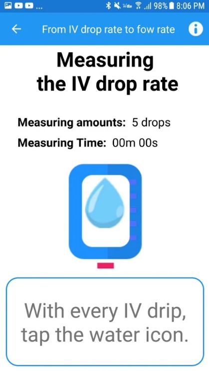
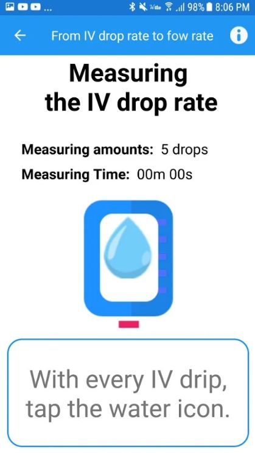

Simple IV Flow Rate check & calculator! : application for Android.
If you need to confirm "how much the fluid actually infused?", this application give you the fast and easy tool for check!!
Simple and easy!
If you have an order for IV infusion, 1,000 ml Lactated Ringers over 8 hours, the calculated IV flow rate is 125 ml/hr (1,000 ml / 8 hr).
A manual roller clamp or dial-a-flow are used to regulate the flow rate.
However, it is difficult to calculate the drip rate and regulate the manual clamp.
1 drop per 2.34 second?
Not possible.
However, with this app you can check your IV flow rate just tapping the icon!!
To calculate the IV flow rate,
-
Set the IV tubing type you will be using (proper drop factor): macro-drip 15 drops/ml or 20 drops/ml (micro-drip is not available now.) The drop factor (the number of drops in one ml of solution) can be found on the IV tubing package.
-
Set the measuring amounts: 5 drops or 10 drops
-
Measure the IV drip rate: tap the water icon with every IV drip. Thereby, this application automatically measure the time to reach the measuring amounts.
For example, if you set the measuring amounts as 10 drops, this app will measure the time it takes until 10 drops fall.
-
Check the calculated IV flow rate: this app then immediately calculate the IV flow rate from drip rate.
 

Product information on this application is intended for general information purposes only. We do not offer patient-specific treatment. Should you have a medical condition, promptly see your own medical doctor or health care provider.
This web page is made by developer of this application. Thanks!